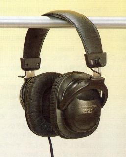
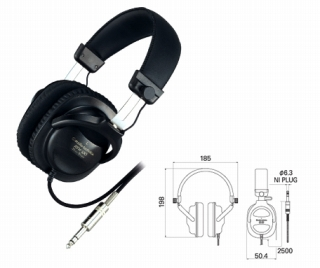
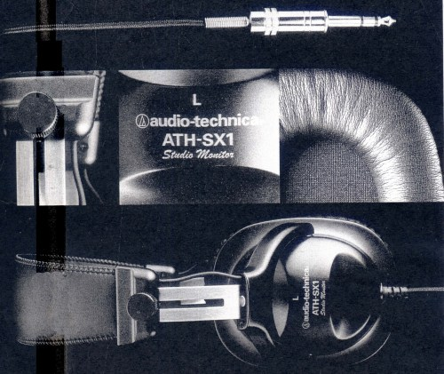
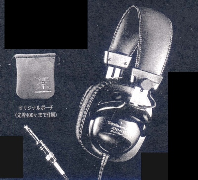

ATH-SX1



■価格 25,000円■型式 密閉ダイナミック型■振動板 40�o■インピーダンス 30Ω■再生周波数帯域 20-20,000Hz■許容入力 2,000mW■感度 100ｄB/mW■コード 2.5m 銅錫合金絹巻線 ステレオ標準プラグ■重量 250g（コード含まず）■発売 1990年台後半■販売終了 ■備考 発売開始当初はオリジナルポーチ付きだった

テクニカのインデックスへ